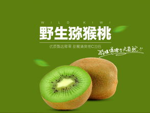
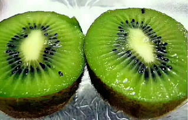

眉县县长叶盛强：猕猴桃产业是眉县群众的致富果、脱贫果、幸福果
 山水眉县，金果飘香。9月22日，第九届中国（国际）猕猴桃产业发展大会暨陕西猕猴桃网络特色季活动，在猕猴桃之乡眉县猕猴桃产业园隆重召开。眉县县长叶盛强就眉县猕猴桃产业发展相趋势，接受了媒体记者的采访。 叶盛强表示，世界猕猴桃的故乡在中国，中国猕猴桃之乡在眉县，眉县作为国内外猕猴桃产业聚集度较高的区域之一，种植面积和产量占全省的三分之一、世界的十分之一，猕猴桃核心技术研究应用走在了全国前列，从种植技术到三产融合，都得到了专家学者和广大消费者的高度认可和肯定。 近年来，眉县一直致力于做优质、安全、高效的果业，坚持一手抓猕猴桃品质提升，一手抓猕猴桃品牌打造，努力把“眉县猕猴桃”打造成“眉县招牌、陕西名片、国家品牌”，让世界共享猕猴桃的美味，“眉县猕猴桃，酸甜刚刚好”已成为国内外消费者对以“徐香”为代表的眉县猕猴桃的最佳赞誉，猕猴桃产业已成为全县群众的致富果、脱贫果、幸福果，成为眉县增收致富的“金蛋蛋”“钱串串”。 今后，眉县将把猕猴桃作为百年产业来打造，努力在种植技术、科技研发、品牌推广、质量追溯、市场营销上下功夫，一方面继续坚持“两手抓”，一手抓品质提升、一手抓品牌打造，全面实施绿色种植，全力保证放心消费；另一方面全力推进猕猴桃产业规模化、标准化、国际化、科技化建设，组建陕西眉县猕猴桃学院，加强果农职业培训；依托何积丰院士工作室，发挥中国猕猴桃大数据中心作用，努力走在猕猴桃产业科技引领的前沿；深入与西北农林科技大学实施县校合作科技入户工程，形成猕猴桃生产十大关键技术、五大品控体系，有效保证猕猴桃的品质安全，进一步带动现代农业高效发展。